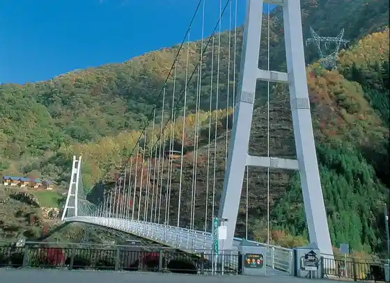
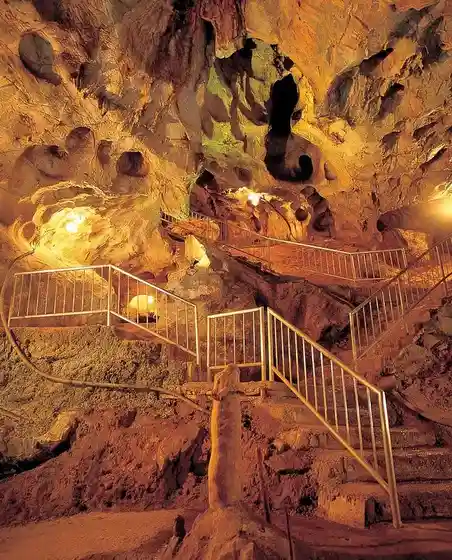
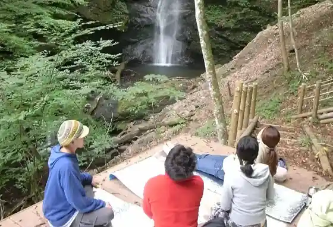

Uenomura Sukaiburijji
Uenomura, Gunma · 0274-59-3117 · Official / source link

Fuji Hora
Uenomura, Gunma · 0274-59-3117 · Official / source link

Kanna Kawa Hatsudensho Kengaku
Uenomura, Gunma · 0274-20-7070 · Official / source link
Shinrin Serapii ®
Uenomura, Gunma · 0274-20-7070 · Official / source link

Chusei Tera
Uenomura, Gunma · 0274-20-7070 · Official / source link
Kasa Maruyama (Yashiotsutsuji)
Uenomura, Gunma · 0274-20-7070 · Official / source link
Roadside Station Ue no
Uenomura, Gunma · 0274-59-2665 · Official / source link
Shio no Sawa Onsen Yamabiko So
Uenomura, Gunma · 0274-59-2027 · Official / source link
Hamahira Onsen Shioji Baths
Uenomura, Gunma · 0274-59-3955 · Official / source link
Foresutoadobencha Uenomura
Uenomura, Gunma · 090-8687-0055 · Official / source link